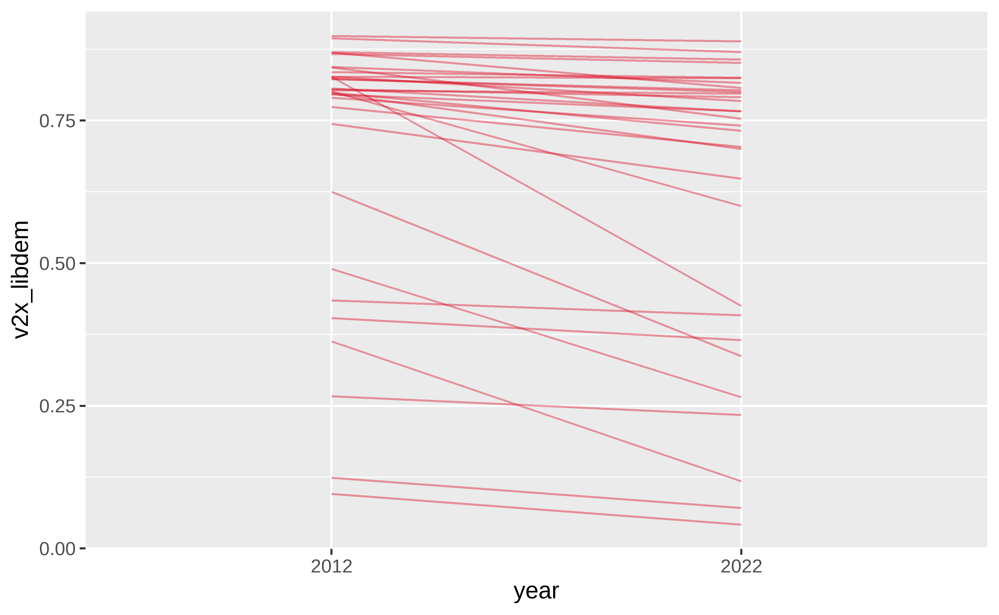
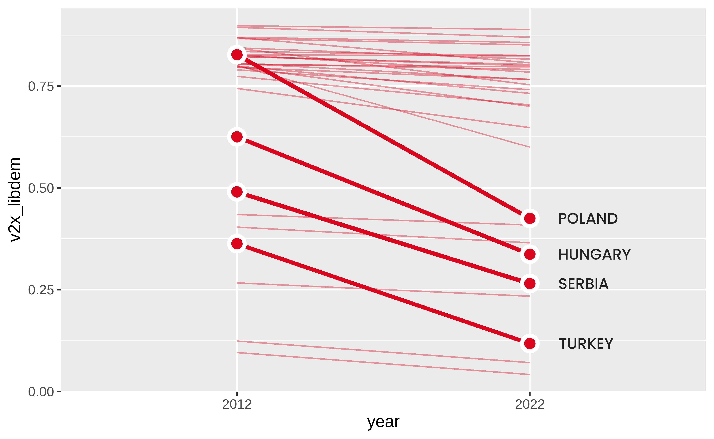
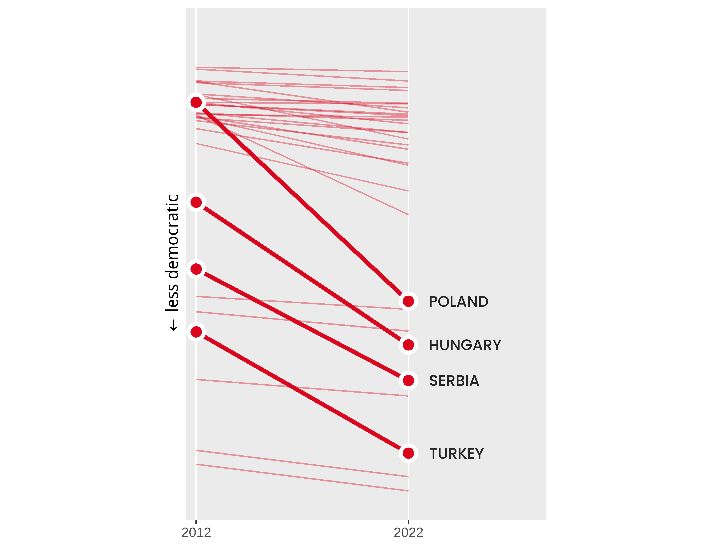
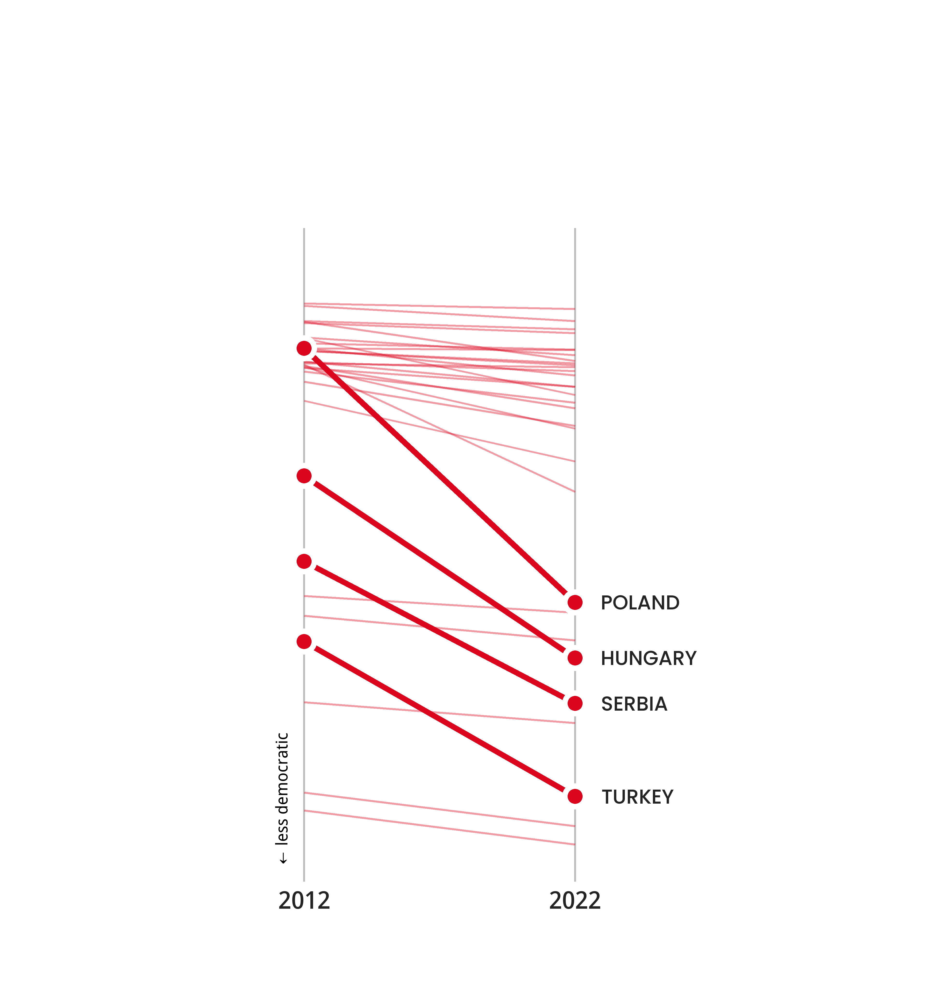
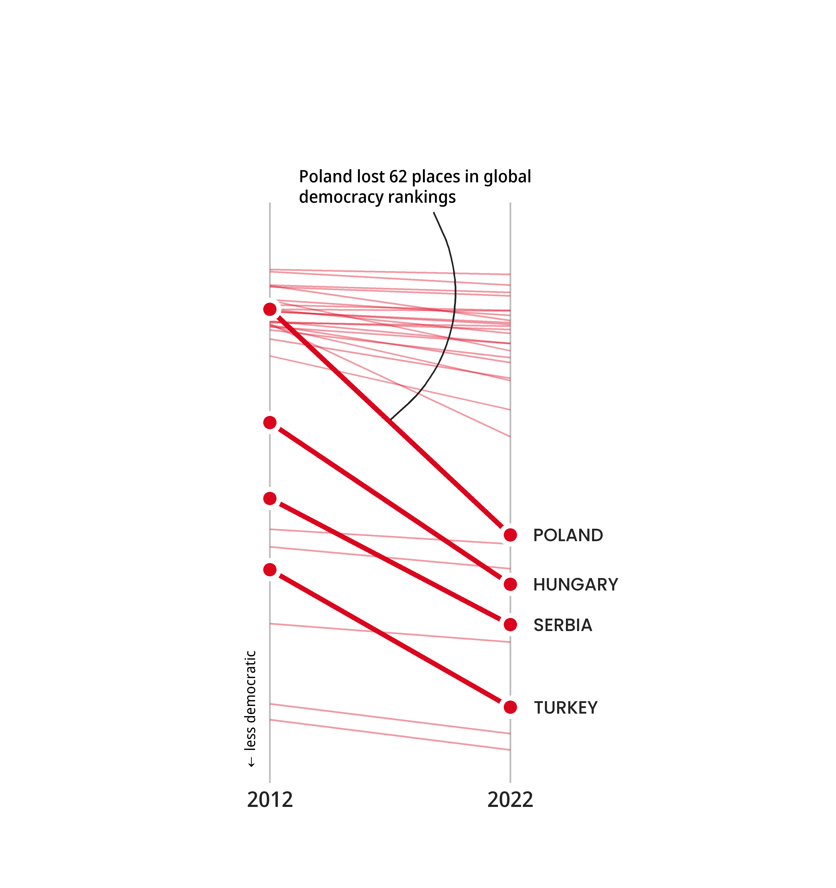
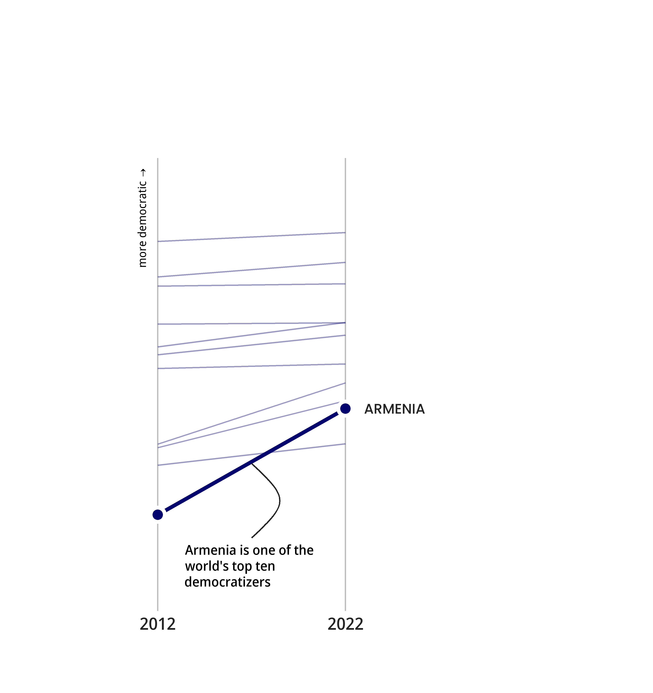
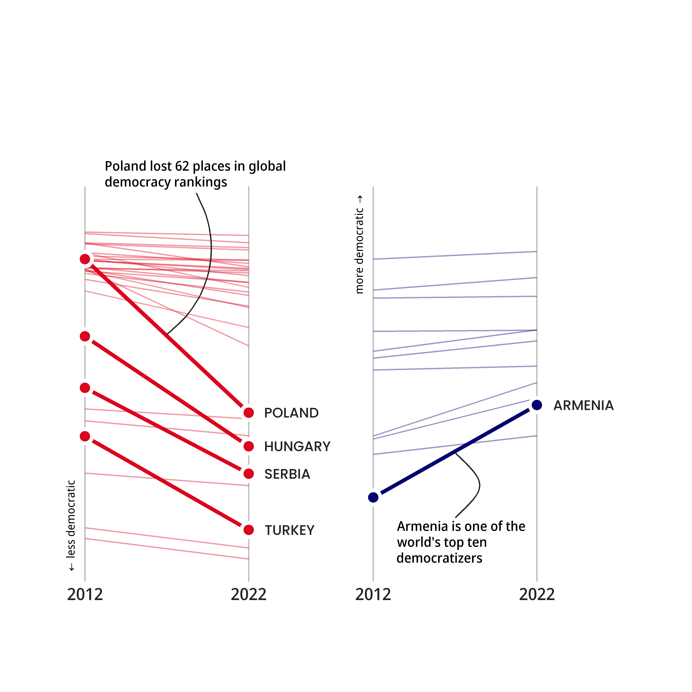
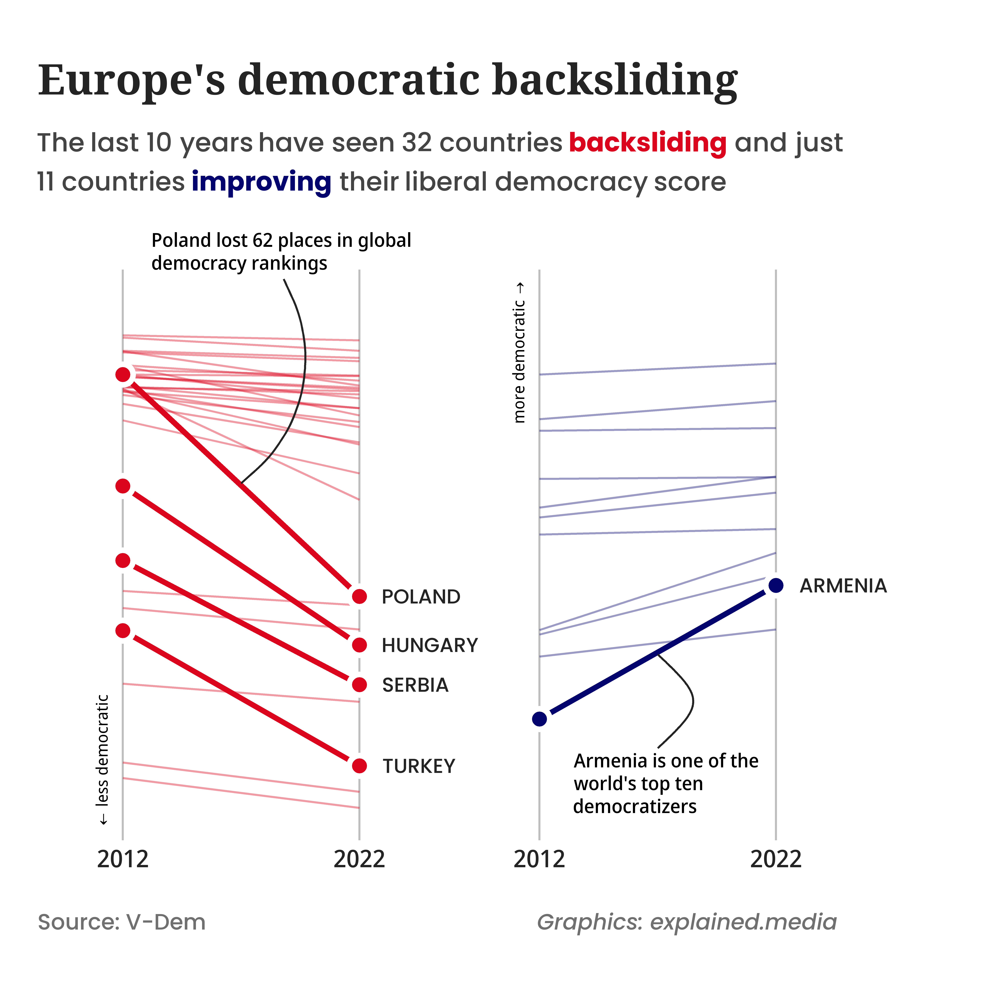
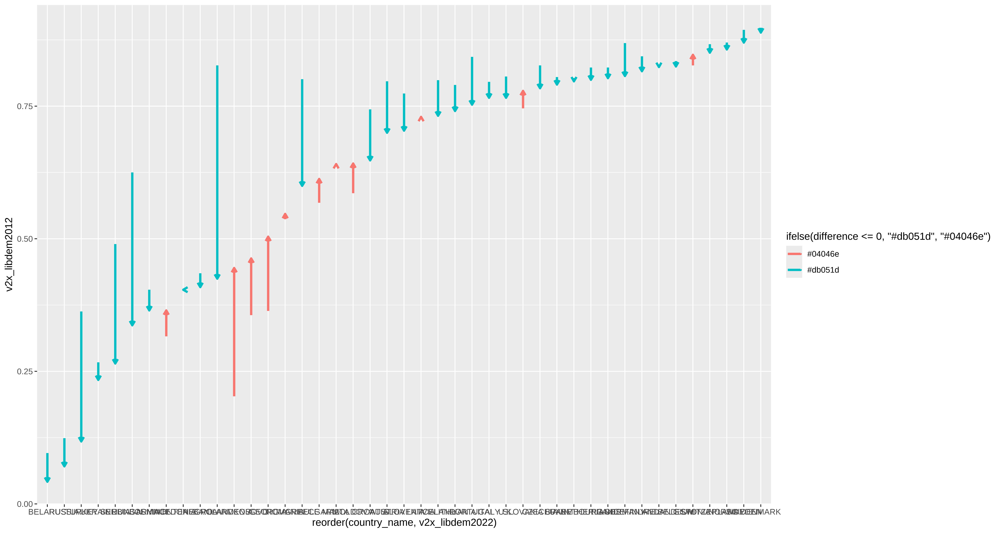

Introduction
Democratic backsliding refers to the gradual erosion of democratic norms, institutions and freedoms. This phenomena often entails the weakening of judicial independence, restrictions on press freedom and civil liberties and the concentration of power in the executive branch.
Democratic backsliding has been, and continues to be a global trend, affecting even European countries and key EU member states. Orbán’s Hungary, Erdoğan’s Turkey and Morawiecki’s Poland are perfect examples of what have often been called “illiberal democracies”. However, during the 2010s democracy has deteriorated significantly also in Greece and Serbia and has been worsening across most European countries. Notable exceptions to this trend of the last decade include potential EU candidates Armenia and Kosovo and EU candidate Georgia (although as this article is being written Georgia is experiencing serious threats to its democratic apparatus).
The graph I chose for my project does a great job in visualizing this trend in a clear way by using the liberal democracy index calculated by V-Dem Institute. Specifically, as democracy is a complex concept that can be defined in many ways, V-Dem’s liberal democracy index “emphasizes the importance of protecting individual and minority rights against the tyranny of the state and the tyranny of the majority […] thus judging the quality of democracy by the limits placed on government via constitutionally protected civil liberties, strong rule of law, an independent judiciary, and effective checks and balances that, together, limit the exercise of executive power.” 1
In this article, after replicating the original graph, I propose an alternative
visualization of the graph using the same data.
Original graph
The original graph chosen for this project was created by explained.media, a Swedish data visualization studio and it can be found in one of their article titled: “Democratic erosion and rising authoritarianism in Europe”.
It is made up of 2 line graphs, one for the countries whose democracy has worsened and another for the countries whose democracy has improve. On the x-axis are depicted the years of the analysis (2012 and 2022) and on the y-axis the liberal democracy score for those years. In addition to that, some countries are highlighted and 2 of them also have special text annotations.
The data I used to replicate this graph is the 13th version of the V-Dem Dataset
available for download in V-Dem’s Dataset Archive.
Replication
Loading libraries, fonts and data
library(tidyverse)
library(grid)
library(gridtext)
library(patchwork)
library(ggforce)
library(ggrepel)
sysfonts::font_add_google("Noto Serif", family="noto_serif",
regular.wt = 700, bold.wt = 900)
sysfonts::font_add_google("Noto Sans Display", family="noto_sans",
regular.wt = 500, bold.wt = 700)
sysfonts::font_add_google("Poppins", family="poppins",
regular.wt = 500, bold.wt = 700)
full_df23 <- read_rds(file="V-Dem-CY-Full+Others-v13.rds")
#retrieved from https://www.v-dem.net/data/dataset-archive/
dim(full_df23)[1] 27555 4602The full dataset contains thousands of variables observed for different countries
and several years, making it necessary to filter only the relevant data for the
intended purpose.
Pre-processing the data
I first select only the variables that are needed for the project and filter only
the observations of the two years depicted. I then make use of the variable
e_regiongeo to filter only those countries located in Europe.
At this point, however, I still have only 40 countries compared to the 43 present
in the original graph. The missing countries are Turkey, Armenia and Georgia
which are not coded in any of the geographical regions for which we have filtered
before, because they are located at the boundaries between Europe and Asia.
Therefore in the second pipeline I add them to the previously selected countries
and transform every country name to uppercase.
#Adding Turkey, Georgia and Armenia
df23 <- full_df23 |>
select(c("country_name", "country_text_id", "e_regiongeo", "year", "v2x_libdem")) |>
filter(year == 2012 | year == 2022) |>
filter(country_text_id %in% c("TUR", "ARM", "GEO")) |>
bind_rows(df23) |>
arrange(country_name) |>
mutate(country_name = toupper(country_name))
str(df23)'data.frame': 86 obs. of 5 variables:
$ country_name : chr "ALBANIA" "ALBANIA" "ARMENIA" "ARMENIA" ...
$ country_text_id: chr "ALB" "ALB" "ARM" "ARM" ...
$ e_regiongeo : num 3 3 10 10 1 1 4 4 1 1 ...
$ year : num 2012 2022 2012 2022 2012 ...
$ v2x_libdem : num 0.435 0.409 0.203 0.445 0.797 0.7 0.096 0.042 0.835 0.825 ...
Since I will need to create two separate graphs based on whether a country’s
democracy has been faring better or worse, I need to split this initial dataframe
in two by that criteria. I do this by creating another variable called
difference which stores the difference between the 2022 and the 2012 values
of the democracy index and then split the data based on positive or negative
values of that variable.
#Creating the column difference
df23 <- df23 |>
pivot_wider(names_from = "year",
values_from = "v2x_libdem",
names_prefix = "year_") |>
mutate(difference = year_2022 - year_2012) |>
pivot_longer(cols=c("year_2012","year_2022"),
names_to = "year",
values_to = "v2x_libdem",
names_prefix = "year_")
#Creating two separate df
df_backsliding <- df23 |>
filter(difference < 0)
df_improving <- df23 |>
filter(difference > 0)
The dataframes are now ready to be used for creating the graph.
Backsliding line graph
I start from the basic aesthetics of the line graph, plotting the 2 years on
the x-axis and the democracy score on the y-axis. Using various arguments of
geom_line I set the width of the lines, their color and their opacity.
basic_bcks <- ggplot(df_backsliding) +
aes(x=year, y=v2x_libdem) +
#Plotting all the lines
geom_line(aes(group = country_name),
linewidth = 0.5,
colour = "#db051d",
alpha = 0.4)
basic_bcks
From the basic graph I highlight selected countries by drawing bigger lines for
them and adding their start and end point and their names. In particular,
when drawing the points I carefully add an outline to them using the
stroke argument of geom_point, while for the countries’ names I slightly
tweak their position for consistency with the original graph and set the closest
possible font, font-size and color.
highlighted_bcks <- basic_bcks +
#Highlighting relevant countries by drawing bigger lines
geom_line(data = df_backsliding %>%
filter(country_text_id %in% c("POL", "HUN", "SRB", "TUR")),
aes(group = country_name),
color = "#db051d",
linewidth = 1.3) +
#Adding start and end point
geom_point(data = df_backsliding %>%
filter(country_text_id %in% c("POL", "HUN", "SRB", "TUR")),
shape = 21,
size = 3.5,
colour = "white",
fill = "#db051d",
stroke = 2) +
#Showing countries' names
geom_text(data = df_backsliding %>%
filter(country_text_id %in% c("POL", "HUN", "SRB", "TUR")
& year == 2022),
aes(label = country_name),
nudge_x = 0.1,
hjust = 0,
size = 10,
size.unit = "pt",
colour = "#242424",
family = "poppins")
highlighted_bcks
I then proceed to modify the aspect of the x and the y axis by setting their names,
their length etc. Finally I fix the ratio of the y-axis’s length to the x-axis’s
length.
axed_bcks <- highlighted_bcks +
#Setting appropriate axis
scale_y_continuous(limits = c(0.03, 0.97),
name = "\u2190 less democratic",
breaks = NULL) +
scale_x_discrete(limits = c("2012", "2022"),
name = NULL,
expand = expansion(mult = c(0.05, 0.65))) +
#Fixing ratio of y-axis length to x-axis length
coord_fixed(ratio = 7/3, clip="off")
axed_bcks
After I have modified the aspect of the axis I modify the whole theme of the
plot. I set a transparent background consistent with the original graph. I add a
margin above, below and on the left of my backsliding line graph so as to
reflect the proportions of the original graph. I then set the font, the fontsize,
color and position of the y-axis name and of the labels on the x-axis. Finally,
I set the color of the x-axis grid lines.
Note that I cannot set the desired font for the y-axis title because the title contains a special character that the font does not support.
themed_bcks <- axed_bcks +
#Modifying theme
theme_minimal() +
theme(panel.background = element_rect(fill = "transparent",
colour = NA),
plot.background = element_rect(fill = "transparent",
colour = NA),
plot.margin = unit(c(4, 0, 1.5, 1.5), "cm"),
axis.title.y = element_text(colour = "black",
face = "bold",
size = 8,
#family = "noto_sans",
hjust = 0.03,
margin = margin(t = 0, r = 0, b = 0, l = 0,
unit="pt")),
axis.text.x = element_text(colour = "#242424",
size = 12,
family = "noto_sans",
margin = margin(t = 2, r = 0, b = 0, l = 0,
unit="pt")),
panel.grid.major.x = element_line(colour = "grey"))
themed_bcks
As the last step for the first line graph, I add the annotation for Poland. I
create a text annotation placing it in the correct position and adjusting, as
always, its font, fontsize and color. I then add a curve to link this annotation
to Poland’s line in the main graph.
Note that here it would be better to use geom_bezier, instead of geom_curve to have a more similar curvature to the original graph. However, when attempting to use bezier, I am unable to extend the curve correctly until the top of the graph, as the function seems to confuse normal coordinates and npc units.
# bezier_data_bcks <- data.frame(
# x = c(1.68, 1.75, 1.75, 1.5),
# y = c(1, 0.81, 0.83, 0.63))
final_bcks <- themed_bcks +
#Annotating for Poland
annotation_custom(grob = textGrob(
label = "Poland lost 62 places in global\ndemocracy rankings",
x = unit(0.1, "npc"),
y = unit(1, "npc"),
just = c("left", "bottom"),
gp = gpar(colour = "#242424",
fontsize = 9.5,
fontfamily = "noto_sans",
lineheight = 1))) +
# geom_bezier2(data = bezier_data_bcks, aes(x = x, y = y),
# colour = "#242424", linewidth = 0.5) +
geom_curve(x = 1.68, y = 1, xend = 1.5, yend = 0.63,
curvature = -0.4,
colour = "#242424",
linewidth = 0.5)
final_bcks
The first part of the graph is now completed. I can now create the other line graph
and then finally put them together and annotate the general graph with its title,
subtitle and captions.
Improving line graph
To construct the second line graph I use the same elements of the backsliding
graph adjusted accordingly. The main difference is that here I am able to use
geom_bezier for the curve from the text annotation to Armenia’s line,
creating a curve that resembles much more that of the original graph.
bezier_data_impr <- data.frame(
x = c(1.5, 1.70, 1.70, 1.5),
y = c(0.15, 0.23, 0.24, 0.32))
final_imprv <- ggplot(df_improving)+
aes(x=year, y=v2x_libdem) +
geom_line(aes(group = country_name),
linewidth = 0.5,
colour = "#04046e",
alpha = 0.4) +
geom_line(data = df_improving %>% filter(country_text_id %in% c("ARM")),
aes(group = country_name),
color = "#04046e",
linewidth = 1.3) +
geom_point(data = df_improving %>% filter(country_text_id %in% c("ARM")),
shape = 21,
size = 3.5,
colour = "white",
fill = "#04046e",
stroke= 2) +
geom_text(data = df_improving %>% filter(country_text_id %in% c("ARM")
& year == 2022),
aes(label = country_name),
nudge_x = 0.1,
hjust = 0,
size = 10,
size.unit = "pt",
colour = "#242424",
family = "poppins") +
scale_y_continuous(breaks = NULL,
limits = c(0.03,0.97),
name= "more democratic \u2192") +
scale_x_discrete(limits = c("2012", "2022"),
expand = expansion(mult = c(0.05,0.9)),
name=NULL) +
theme_minimal() +
theme(panel.background = element_rect(fill = "transparent", colour = NA),
plot.background = element_rect(fill = "transparent", colour = NA),
plot.margin = unit(c(4, 0, 1.5, 0), "cm"),
axis.title.y = element_text(colour = "black",
face = "bold",
size = 8,
#family = "noto_sans",
hjust = 0.97,
margin = margin(t = 0, r = 0, b = 0, l = 0,
unit="pt")),
axis.text.x = element_text(colour = "#242424",
size = 12,
family = "noto_sans",
margin = margin(t = 2, r = 0, b = 0, l = 0,
unit="pt")),
panel.grid.major.x = element_line(colour="grey")) +
coord_fixed(ratio = 7/3, clip="off") +
annotation_custom(grob = textGrob(
label = "Armenia is one of the\nworld's top ten\ndemocratizers",
x = unit(0.1, "npc"),
y = unit(0.1, "npc"),
just = c("left", "center"),
gp = gpar(colour = "#242424",
fontsize = 9.5,
fontfamily = "noto_sans",
lineheight = 1))) +
geom_bezier2(data = bezier_data_impr, aes(x = x, y = y),
colour = "#242424", linewidth = 0.5)
final_imprv
Even for the improving graph I set appropriate margins so as to be able to
keep the proportions of the original graph when I join it, in the next step,
with the backsliding graph.
Putting the graphs together
general <- final_bcks + final_imprv
general
Using patchwork I put the two graphs together side by side and I will now
annotate this general graph with its title, subtitle and the 2 captions.
Adding title, subtitle and captions
I first create the textGrob for the title, subtitle and captions, making sure
I accurately try to replicate their font, dimension and color.
# Create text grobs for the title, subtitle and caption
title_grob <- grid::textGrob(
label = "Europe's democratic backsliding",
x = 0, y = 1,
just = c("left","top"),
gp = gpar(col = "#242424",
fontsize = 21,
fontface = "bold",
fontfamily = "noto_serif"))
subtitle_grob <- gridtext::richtext_grob(
text = "The last 10 years have seen 32 countries
**<span style='color:#db051d;'>backsliding</span>**
and just<br> 11 countries
**<span style='color:#04046e;'>improving</span>**
their liberal democracy score",
x = 0, y = 1,
hjust = 0, vjust = 1,
gp = gpar(col = "#444444",
fontsize = 13,
fontfamily = "poppins",
lineheight = 1.5))
caption_grob <- grid::textGrob(
label = "Source: V-Dem",
x = 0, y = 0,
just = c("left","center"),
gp = gpar(col = "#707070",
fontsize = 11,
fontfamily = "poppins"))
caption2_grob <- grid::textGrob(
label = "Graphics: explained.media",
x = 0, y = 0,
just = c("left","center"),
gp = gpar(col = "#707070",
fontsize = 11,
fontface = "italic",
fontfamily = "poppins"))
I then use inset_element to to position and insert the text objects in the
desired locations.
# Add them with inset elements
general +
inset_element(title_grob,
left = -1,
right = 1,
bottom = 0.85,
top = 0.975,
align_to = "full",
on_top= FALSE) +
inset_element(subtitle_grob,
left = -1,
right = 1,
bottom = 0.85,
top = 0.9,
align_to = "full",
on_top = FALSE) +
inset_element(caption_grob,
left = -1,
right = 0,
bottom = 0.04,
top = 0.09,
align_to = "full",
on_top = FALSE) +
inset_element(caption2_grob,
left = 0.05,
right = 1,
bottom = 0.04,
top = 0.09,
align_to = "full",
on_top = FALSE)
This is the final version of my replica which I think comes quite close to the
original graph.
Alternative Visualization
Using the same data as before, I try to propose an alternative visualization that adds some information to the previous graph. In particular I thought it would be helpful to add the labels for each country so as to allow readers to easily identify the countries they are interested in. By doing this, I would also be able to show the ranking of the most to the least democratic country.
To do this I’ll produce a horizontal lollipop using arrows instead of points to
indicate the values for 2012 and 2022.
Preparing the data
#Prepare the data
df_lollipop <- df23 |>
pivot_wider(names_from = year,
values_from = v2x_libdem,
names_prefix = "v2x_libdem") |>
arrange(desc(v2x_libdem2022))
#Reduce some countries' names
df_lollipop <- df_lollipop |>
mutate(country_name = case_when(
country_name == "BOSNIA AND HERZEGOVINA" ~ "BOSNIA H.",
country_name == "UNITED KINGDOM" ~ "U.K.",
country_name == "NORTH MACEDONIA" ~ "N. MACEDONIA",
TRUE ~ country_name
))
str(df_lollipop)tibble [43 × 6] (S3: tbl_df/tbl/data.frame)
$ country_name : chr [1:43] "DENMARK" "SWEDEN" "NORWAY" "SWITZERLAND" ...
$ country_text_id: chr [1:43] "DNK" "SWE" "NOR" "CHE" ...
$ e_regiongeo : num [1:43] 2 2 2 1 2 1 2 2 1 1 ...
$ difference : num [1:43] -0.009 -0.024 -0.013 -0.016 0.02 ...
$ v2x_libdem2012 : num [1:43] 0.898 0.894 0.87 0.867 0.827 0.835 0.827 0.844 0.869 0.823 ...
$ v2x_libdem2022 : num [1:43] 0.889 0.87 0.857 0.851 0.847 0.825 0.824 0.816 0.807 0.803 ...
Starting from the dataframe with all the relevant filtered data, I re-arrange it
in order to be able to use it for my purpose and I abbreviate some countries’ names
so as not to have labels that are too long.
Base graph
#Plot the vertical lollipop chart
improvements_v1 <- ggplot(df_lollipop) +
geom_segment(aes(x = reorder(country_name, v2x_libdem2022),
xend = reorder(country_name, v2x_libdem2022),
y = v2x_libdem2012,
yend = v2x_libdem2022,
colour = ifelse(difference <=0, "#db051d", "#04046e")),
linewidth = 1.2,
arrow = arrow(length = unit(0.01, "npc")))
improvements_v1
I’ve decided to start from a basic vertical lollipop, drawing for each country
an arrow connecting the 2012 value of the democracy score with the 2022 score. I
give to the arrows different colors depending on whether, over that period,
that country has experienced a democratic erosion or it has improved its democratic
status. I also make sure to order the countries based on their 2022 democracy
score.
Organizing the graph
improvements_v2 <- improvements_v1 +
#Modifying scales
scale_color_identity() +
scale_y_continuous(
breaks = c(0,0.2,0.4,0.6,0.8,1),
limits = c(0,1),
expand = expansion(add = 0),
name = paste("\u2190 less democratic",
strrep(" ", 75),
"more democratic \u2192")) +
#Flip the chart horizontally
coord_flip() +
#Theme adjustments
theme_minimal() +
theme(legend.position = "none",
axis.text.y = element_text(colour = "#242424",
size = 9,
family = "noto_sans"),
axis.title.y = element_blank(),
axis.text.x = element_text(colour = "#242424",
size = 9,
family = "noto_sans"),
axis.title.x = element_text(size = 15),
panel.grid.minor = element_blank(),
plot.margin = unit(c(4.5, 0.1, 0, 0), "cm"))
improvements_v2
In this pipeline I flip the vertical lollipop to make it horizontal. I also
adjust the scales to make the colors appear as wanted, and to set an appropriate
number of breaks for the democracy index score. Additionally I label the
democracy index axis in a way that clearly shows its meaning. Finally, I
adjust the theme of the plot, getting rid of the automatic legend, the minor
grid lines, and setting appropriate margins. I try to keep the general style of
the plot, the fonts as similar as possible to the previous graph.
Inserting arrow legend
improvements_v3 <- improvements_v2 +
#Adding the custom legend
geom_rect(aes(xmin = 32.5, xmax = 41.5, ymin = 0.1, ymax = 0.5),
fill = "white", color = "#242424") +
geom_segment(aes(x = 39.5, y = 0.2, xend = 39.5, yend = 0.4),
arrow = arrow(length = unit(0.01, "npc")),
linewidth = 1.2,
color = "#04046e") +
geom_point(aes(x = 39.5, y = 0.2),
shape = 1, size = 9, stroke = 1.2, color = "#242424") +
geom_point(aes(x = 39.5, y = 0.3965),
shape = 1, size = 9, stroke = 1.2, color = "#242424") +
geom_label_repel(aes(x = 39.5, y = 0.2),
stat = "unique",
label = "Arrow tail = 2012",
color = "#242424",
size = 6,
direction = "x",
nudge_x = -4.5,
point.padding = 1.8,
label.padding = 0.5,
label.r = 0.5,
label.size = 0.7,
segment.size = 0.7) +
geom_label_repel(aes(x = 39.5, y = 0.3965),
stat = "unique",
label = "Arrow head = 2022",
color = "#242424",
size = 6,
direction = "x",
nudge_x = -4.5,
point.padding = 1.8,
label.padding = 0.5,
label.r = 0.5,
label.size = 0.7,
segment.size = 0.7)
improvements_v3
I then add a custom legend to make sure to explain the functioning of the arrows
and place it an empty place of my panel. I use geom_rect to create a bordered,
white space in which to place the legend in. Then I draw an arrow and annotate
this arrow by circling its tail and head and labeling their meaning.
Adding annotations
title_grob_plot2 <- gridtext::richtext_grob(
text = "Changes in Liberal Democracy Scores (2012
<span style='font-size:50px;'>→</span>2022)",
x = 0, y = 1,
hjust = 0, vjust = 1,
gp = gpar(col = "#242424",
fontsize = 32,
fontface = "bold",
fontfamily = "noto_serif"))
subtitle_grob_plot2 <- gridtext::richtext_grob(
text =
"<span style='font-size:30px;'>Is there a democratic backsliding in Europe?</span><br>
75% of European countries are now
**<span style='color:#db051d;'>less democratic</span>**
than they were in 2012.<br>
Only 25% of European countries are
**<span style='color:#04046e;'>more democratic</span>**
now than in 2012",
x = 0, y = 1,
hjust = 0, vjust = 1,
gp = gpar(col = "#444444",
fontsize = 18,
fontfamily = "poppins",
lineheight = 1.5))
improvements_v3 +
#Adding annotations for Poland and Armenia
annotation_custom(grob = textGrob(
label = "Poland lost 62 places in global\ndemocracy rankings",
x = unit(0.85, "npc"),
y = unit(0.175, "npc"),
just = c("center", "top"),
gp = gpar(colour = "#242424",
fontsize = 13,
fontfamily = "noto_sans",
lineheight = 1))) +
geom_curve(x = 11, y = 0.7, xend = 7, yend = 0.76,
curvature = 0.5,
colour = "#242424",
linewidth = 0.5) +
annotation_custom(grob = textGrob(
label = "Armenia is one of the\nworld's top ten\ndemocratizers",
x = unit(0.19, "npc"),
y = unit(0.5, "npc"),
just = c("center", "top"),
gp = gpar(colour = "#242424",
fontsize = 13,
fontfamily = "noto_sans",
lineheight = 1))) +
geom_curve(x = 12, y = 0.275, xend = 19, yend = 0.19,
curvature = -0.2,
colour = "#242424",
linewidth = 0.5) +
#Adding caption
labs(caption = paste("Paroli (2025)'s reinterpretation of a graph by explained.media",
strrep(" ", 325),
"Source: V-Dem Dataset")) +
theme(plot.caption = element_text(color = "#707070",
size = 8,
family = "poppins",
margin = margin(t = 5))) +
#Inserting title and subtitle
inset_element(title_grob_plot2,
left = 0,
right = 1,
bottom = 0.95,
top = 1,
align_to = "full",
on_top= FALSE) +
inset_element(subtitle_grob_plot2,
left = 0,
right = 1,
bottom = 0.85,
top = 0.95,
align_to = "full",
on_top = FALSE)
For the final version of my alternative visualization graph, I add several
annotations. I add the same in-graph annotations for Poland and Armenia present
in the previous graph. I create and insert the title and subtitle as Grobs and
I add the captions. Again, I try to keep the style and formatting similar to the
previous graph.
Conclusions
As mentioned before, the main advantage of the alternative visualization compared to the replica is the fact that each European country is labelled, allowing the readers to see the democracy score for each country. Ordering them by their 2022 score improves the visualization and adds another piece of information. Another addition compared to the replica is the explicit scale that makes it clear that the democracy score goes from 0 to 1, helping to understand how democratic a country is. Including these additional pieces of information, however, reduces the intuitiveness and simplicity of the graph, making it more complex to read.
I also think the alternative visualization lacks a bit of the visual impact of the original. Since in the original graph, countries with worsening and improving democracies are displayed on two separate graphs, it makes the backsliding trend immediately apparent by comparing the number of lines in each graph. In contrast, the alternative visualization requires more time to make this comparison.
The main drawback of the alternative visualization, though, is that some data points appear “ugly”. This occurs for those countries whose democracy index changed little between 2012 and 2022, resulting in arrows that are barely visible.
Overall, I believe the original graph does a better job of communicating the general trend of weakening of democratic institutions in Europe in recent years. The second graph, instead, offers a more nuanced perspective by incorporating additional details. While the trend of democratic backsliding is real and concerning—evident in the graph by the larger number of countries experiencing significant declines in democratic conditions compared to those showing meaningful improvements—the concentration of red lines in the original graph can mislead readers into overestimating its severity. Although, some countries (as the ones mentioned in the introduction) have experienced a worrisome, sharp decline in the health of their democracies, other red lines represent nations where the democracy index has only slightly worsened. This distinction is harder to discern in the first graph, whereas in the second, the fact that the length of each arrow reflects the magnitude of change helps to improve the visual understanding of the nuances of this phenomenon.
Definition from the V-Dem Dataset codebook available at https://v-dem.net/data/reference-documents/↩︎